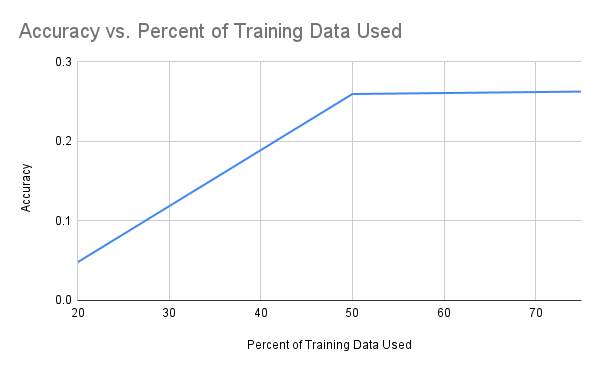

We all depend on crops as a major part of our global food supply, and as a result, the swift detection of crop diseases is essential to maximizing the output of our fields and ensuring the health of the ingredients used in everyday products. However, manual detection of plant diseases is tedious; during the process of identification, disease continues to propagate rapidly. It also requires a high level of expertise and can be highly error prone [3]. Many of these reasons have spurred research efforts to use machine learning and deep learning to train models to identify diseased plants as well as the specific type of disease in order to aid in quick prevention of the spread of harmful blights that can ruin fields of crops. For example, Kurlkarni et al. predicted several types of diseases each for images of five species of crops using a random forest classifier and was able to achieve an average accuracy of 93% [4]. Other papers have ventured beyond traditional machine learning methods; one group used CNNs to classify a dataset of diseased and healthy plant leaves to achieve a 99.3% accuracy [1].
We plan to use the PlantVillage dataset, which contains 54,303 images of healthy and diseased plant leaves from 13 species, including apples, corn, grapes, and tomatoes, with various diseases such as black rot, common rust, and bacterial spot. It can be found here.
The health of our crops is crucial for meeting our daily needs. Unfortunately, many people lack the knowledge to accurately identify diseases in their plants. To address this issue, we are working on developing a machine learning model that can distinguish between healthy and unhealthy leaf images across various plant species and diseases. Our model could have significant applications in the agriculture industry, as detecting diseased plants is essential for ensuring food security and protecting ecosystems from harm.
In order to preprocess our images, we utilized a grayscale method to create a grayscale version of the PlantVillage dataset. Opting for grayscale as our preprocessing technique allowed us to remove color bias from the model and reduce computational complexity. For image classification, we employed a decision tree model. We selected a decision tree for training as it is known for its simplicity in computation compared to other models, yet remains highly effective in hierarchically classifying images.
When running our decision tree model, we trained on different percentages of the Plant Village dataset due to the computational complexity and time involved in training. Below is a visualization of the model accuracy when trained with different percentages of the Plant Village dataset:
Click here to see a figure demonstrating our decision tree model as a tree.
In this project, our goal is to develop an effective model to identify diseased and healthy plants. Our model will first take a leaf image of a plant conducting preprocessing to extract key features from the image such as identifying possible areas of lesions. We hope our model will have a classification accuracy above 90% detection for healthy vs unhealthy. This would indicate that our model can be trusted to give correct information, allowing more confident use when applied to the agricultural field. Some current models have achieved 96% accuracy such as the DBN [3]. Therefore, we’ve also set a similar more reasonable goal for our model given our resources. Likewise, we aim for precision and recall rates above 0.90 to indicate fewer false positives and negatives as well as resulting F1 Score around 0.90. A high precision rate is critical in terms of the losses associated with false positives. If the model falsely classifies a crop as diseased, it could result in resources wasted on preventing the spread of disease or the extermination of healthy plants. A high recall rate is important for mitigating the risks of false negatives. If the model fails to classify a diseased crop, the disease would spread, killing fields of crops and resulting in significant economic loss for farms. The derived F1 Score is a concise representation of both false positives and negatives and an overall balance in precision and recall.
The metrics for our decision tree classifier were:
As seen in our metrics, though the decision tree classifier made significant progress from randomly guessing what disease a plant has, its accuracy is still relatively low. This could be due to several reasons. Firstly, decision tree models are not the best choice for image data, as image data is high-dimensional (for example, our 256 x 256 pixel dataset led to 65,536 features for the decision tree). Additionally, decision trees consider each feature separately without incorporating spatial information, which is highly ineffective for image data. Finally, since our preprocessing mechanism involved gray-scaling the images, this may have led to loss of some valuable information that resulted in a lower accuracy of the model. Thus, the relatively low accuracy for the decision tree trained on PlantVillage is relatively expected.
Our next steps involve training a CNN (convolutional neural network) to classify plant diseases from the Plant Village dataset. We expect that our CNN model will be much more accurate, as CNNs are optimized and built to find patterns in and classify images. They eliminate all the drawbacks mentioned as the causes for low accuracy in our decision tree model, as they can accommodate the high-dimensional data associated with images, and use convolutions to detect important features in images. In addition to training models such as CNNs on our data, we also plan to investigate other pre-processing mechanisms; for example, we plan to run PCA (Principal Component Analysis) on the images to reduce the complexity of the input space.
[1] Hassan, S. M., & Maji, A. K. (2022). Plant disease identification using
a novel convolutional neural network. IEEE Access, 10, 5390–5401.
https://doi.org/10.1109/access.2022.3141371
[2] Kulkarni, P., Karwande, A., Kolhe, T., Kamble, S., Joshi, A., &
Wyawahare, M. (2021). Plant Disease Detection Using Image Processing and
Machine Learning. https://doi.org/10.48550/arXiv.2106.10698
[3] Shoaib, M., Shah, B., EI-Sappagh, S., Ali, A., Ullah, A., Alenezi, F.,
Gechev, T., Hussain, T., & Ali, F. (2023). An advanced deep learning
models-based Plant Disease Detection: A review of recent research. Frontiers
in Plant Science, 14. https://doi.org/10.3389/fpls.2023.1158933
[4] Kulkarni, P., Karwande, A., Kolhe, T., Kamble, S., Joshi, A., &
Wyawahare, M. (2021). Plant disease detection using image processing and
machine learning. arXiv preprint arXiv:2106.10698
| Name | Midterm Contributions |
|---|---|
| Joanna Cheng | Decision Tree Training, Introduction/Background, Problem Definition |
| Aishwarya Chakravarthy | Decision Tree Training, Methods, Results and Discussion |
| Keerthi Konuganti | Introduction/Background, Problem Definition, Methods, References |
| Felicia Jamba | Introduction/Background, Problem Definition, Methods, References |
| Aaron Liu | Decision Tree Training, Introduction/Background, Problem Definition |